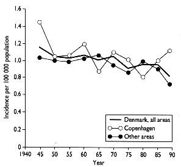

THE CIRCUMCISION REFERENCE LIBRARY
Correspondence to: Dr Frisch.
BMJ 1995; 311:1471
Boys circumcised neonatally are effectively protected against penis cancer. [CIRP note: See letter ff.] Using data from the Danish Cancer Registry we investigated the long term trends in the incidence of penis cancer in a virtually uncircumcised population.
Penis cancers diagnosed in Denmark during 1943-90 and notified to the cancer registry were evaluated manually. We excluded scrotal and epididymal cancers and 39 non-epidermoid penis cancers (20 basal cell carcinomas, nine melanomas, and 10 others). World standardized incidence rates were calculated and linear regression applied to evaluate the temporal changes in incidence (five year data) and age distribution. We evaluated the impact of marital status in a case control design using patients with colon and stomach cancers diagnosed in the same period as controls. The odds ratios of never having married were calculated using logistic regression.

Incidence rates of penis cancer per 100,000 person years (world standardised) among men
living in Copenhagen (including suburbs) and men living in other areas of Denmark, 1943-90
The material comprised 1,523 epidermoid penis cancers (including 207 without specified histology). Patients were 22 to 95 years old at diagnosis. Incidence rates fell 0.5% a year from 1.15 (95% confidence interval 0.94 to 1.36) in 1943-7 to 0.82 (0.65 to 0.99) per 100,000 person years in 1988-90 (P=0.002) (figure).
Of 1,516 patients with information available about marital status at the time of diagnosis, 10.6% had never married. The corresponding percentages among control patients with colon and stomach cancer were 7.3% and 8.6%, respectively. The mean age at diagnosis increased among men who had ever married from 64 years in 1943-62 to 67 years in 1978-90 (P<0.0001). Patients with penis cancer who had never married living in the Copenhagen area were generally younger (mean age 60 years). After adjustment for age (10 year intervals), calendar period (five year periods), and place of residence (Copenhagen and suburbs v. rest of Denmark), patients with penis cancer were significantly more likely to have remained unmarried than patients with colon cancer (odds ratio=1.4; 95% confidence interval: 1.2 to 1.6). This applied in different strata of age and calendar period, and a particularly high risk was found for unmarried men in the Copenhagen area (odds ratio=1.9; 1.4 to 2.6). Compared with patients with stomach cancer, the association with unmarried marital status was not present (odds ratio=l.l; 0.97 to 1.4), except among those living in the Copenhagen area (odds ratio= 1.7; 1.2 to 2.3).
Improvements in diagnostic methods can be ignored when considering factors influencing the incidence of penis cancer. Also, the proportion of undiagnosed or mis-classified cases is likely to be negligible.
With phimosis and penis cancer as two central issues, neonatal circumcision has been the subject of considerable debate for more than a century. , The virtual absence of penis cancer in populations prescribing neonatal circumcision has been a crucial argument in this discussion. However, only 511 out of approximately 478,000 Danish boys aged 0-14 years were circumcised in 1986 (National Board of Health, personal communication), corresponding to a cumulative national circumcision rate of around 1.6% by the age of 15 years. Thus, the declining incidence of penis cancer in Denmark cannot reasonably be attributed to an increased practice of neonatal circumcision.
The observed association with marital status might be explained by socioeconomic and hygiene factors. The finding that patients with penis cancer and patients with stomach cancer who predominate h lower socioeconomic strata had rather similar marital status patterns supports this. Also, even though it is not established how and to what extent men who had never or ever married differ in sexual behavior, it seems plausible that within the broad category of men who had never married, the proportion of men with lifestyles characterized by unstable partner relations and poor genital hygiene may be larger than among men who had ever married. This might particularly be so in the Copenhagen area, the only metropolitan area of Denmark. During the period under study, the proportion of Danish dwellings having a bath increased gradually from 35% in 1940 to 90% in 1990. It seems plausible that better penile hygiene resulting from this improvement in sanitary installations might have contributed to the observed trend.
Funding: Danish Cancer Society.
Conflict of interest: None.
(Accepted 30 Aug., 1995)
http://www.cirp.org/library/disease/cancer/frisch/